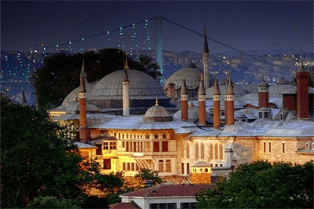

Собор Святой Софии

Собор Святой Софии – визитная карточка Стамбула и самый яркий представитель зодчества времен Византийской империи.Строительство храма длилось 5 лет руками 10 тысяч рабочих. Во времена Византийской империи он был центром Византии и соседствовал с дворцом императора. Освящение храма датировано 537 годом. Строили монументальное здание высотой более 50 метров из кирпича. Для отделки применяли самые дорогие материалы: золото, слоновую кость, серебро, мрамор, драгоценные камни. Собор Святой Софии стал символом величия и могущества Византии. До захвата Османами в 1453 году он служил в качестве православного храма. После установления Османской империи обращен в мечеть. С 1935 года Собору присвоен новый статус – он становится музеем. Находится Собор Святой Софии в самом центре старой части Стамбула. Поражает не только величие самого здания, мозаика, фрески и богатство внутренней отделки, но и мощная энергетика, которую отмечают туристы, посетившие храм. Неудивительно, что в храме с богатейшей историей соседствуют славянские надписи, рунические символы и исламские элементы.
Дворец Топкапы

Ни одна экскурсия по историческим местам Стамбула не обходится без посещения дворца Топкаты, бывшей резиденции султана на протяжении четырех веков, ставшей после падения Османской империи музеем. Топкаты в переводе на русский язык означает пушечный выстрел. Во времена Османской империи здесь производился выстрел из пушки всякий раз, когда султан покидал резиденцию. Строился Дворец для Мехмеда II в XV веке. Спустя сто лет по просьбе Роксоланы султан Сулейман I приказал построить гарем. В XIX веке он утратил свое назначение. Резиденцией султана стал другой дворец. По инициативе общественного деятеля и политика Ататюрка здание дворца получило статус музея.
Голубая мечеть
Самая значимая здание Стамбула – Голубая мечеть (мечеть Султанахмет). Выдающийся образец исламской архитектуры. Мечеть облицована белыми и голубыми плитками из керамики ручной работы, и имеет 6 минаретов с несколькими балконами на каждом. Строительство мечети было приурочено к поражениям Турции в войне с Ираном и Австрией в 1606 году. Султан Ахмет I построил мечеть, чтобы умилостивить Аллаха. Средства для возведения святыни он использовал из собственной сокровищницы. В архитектуре Голубой мечети сочетаются два стиля: византийский и классический османский. Расположенная на берегу Мраморного моря она стала одним из узнаваемых символов Стамбула.
Цистерна Базилика
Цистерна Базилика находится неподалеку от Собора Софии, в районе мечети Султанахмет. В переводе с греческого цистерна означает водохранилище. Расположено это сооружение под землей, и способно вместить до 80 000 кубических метров воды. Строились эти сооружения на случай засухи или осады Стамбула. Всего под городскими улицами археологи обнаружили 40 цистерн. Цистерна Базилика уникальна. Это сооружение похоже на замок, и поражает своей красотой. Потолки высотой более 8 метров украшены сводами. Всего в ней установлены 336 колон. Рядом расположен Бассейн желаний. С 1987 года в цистерне Базилика открыт музем.